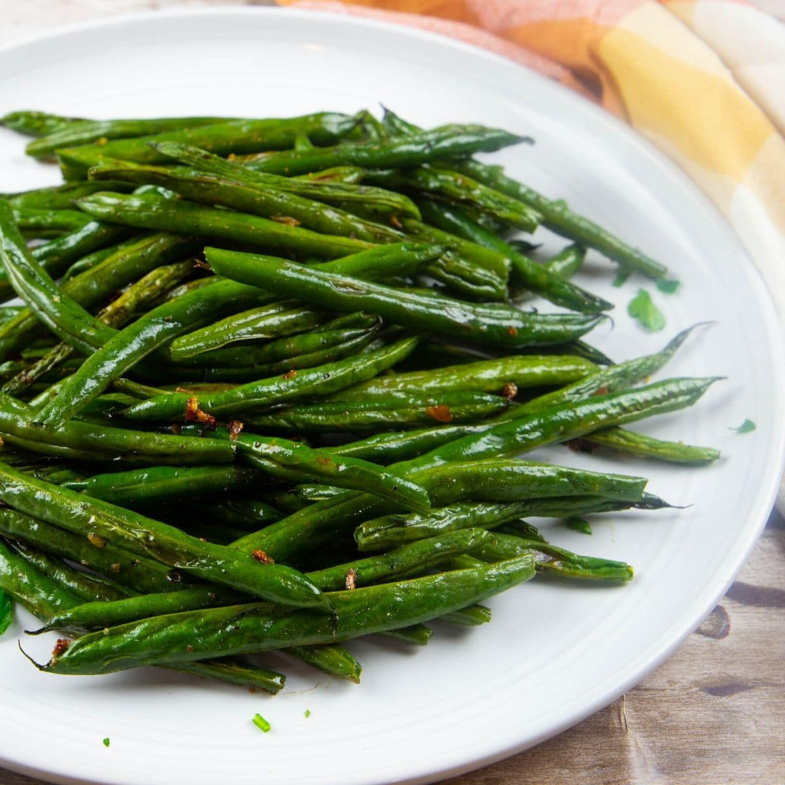

Roasted Green Beans Recipe

Delicious Roasted Green Beans for a head start at your friends and family gatherings
A starter set up the mood of a meal with friends and family. Don't fill people just yet but give them something that will get them nicely appreciating your cooking skills
With this nice and healthy roasted green beans recipe for 6 people, that will take you just 30 minutes to cook, you are assured to put smiles on everyone face.
Ingredients
- 3 pounds fresh green beans, trimmed
- 1 ½ tablespoons olive oil, or as needed
- ½ tablespoon salt
- ¾ teaspoon freshly ground black pepper
Steps to cook those delicious roasted green beans
- Preheat the oven to 400 degrees F (200 degrees C).
- Pat green beans dry with paper towels; spread onto a baking sheet. Drizzle with olive oil and sprinkle with salt and pepper. Use your hands to toss the beans until evenly coated with oil; spread out in a single layer.
- Roast beans in the preheated oven until slightly shriveled with golden caramelized spots, 20 to 25 minutes.